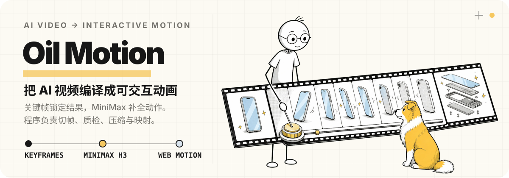

Oil Motion is an agent-agnostic interactive animation Skill. It designs motion, generates continuous frames, prepares animation assets, and wires the final result to page scroll, mouse, drag, touch, or device orientation.
To use it, you only describe what you want to express, which assets you have, and what interaction the animation should follow. The agent handles generation, review, compression, and front-end implementation.
Demo
https://github.com/user-attachments/assets/08e26ad6-ca23-4f31-ac53-44c7692ba99d
Installation
Tell your agent: install the oil-motion Skill from “https://github.com/oil-oil/oil-motion”.
Animations it fits
- A product gradually unfolds, breaks apart, or switches states as the page scrolls down.
- A character, pet, or product naturally turns toward the cursor as the mouse moves.
- Animation follows a drag gesture — forward, backward, or holding at a position.
- Touch or device orientation controls the scene on mobile.
- Clicks, hovers, or component state changes trigger the corresponding motion.
- Plays naturally when idle, then switches to follow mode once the user interacts.
These animations fit product intros, character interactions, interaction demos, data changes, and chapter transitions. Oil Motion also handles motion continuity, frame clarity, loading size, and mobile performance.
How it works
Oil Motion first turns generated media into a verified timeline, then chooses how input controls time: continuous scrubbing, event-triggered segment playback, or autonomous playback. Scroll, pointer, and component state are input sources; they do not determine the playback mode by themselves.
The full pipeline:
Reference assets, intent, and control method
↓
Define what the start, middle, and end should look like
↓
Use AI video generation to create the continuous motion between those frames
↓
Review frame by frame; remove pauses, duplicates, and artifacts
↓
Trim and compress assets to the actual display size on the page
↓
Connect the selected input to the selected timeline controllerThe pipeline has three parts.
1. Lock the key frames
Key frames are the few states that must stay accurate throughout the motion — for example, the complete product, the parts expanded, and the final teardown. The agent generates and reviews these first, verifying that subject identity, structure, logo, composition, and style stay consistent.
Generating a full video directly risks the model changing product structure, character proportions, or the motion’s end point mid-way. Locking key frames first gives the continuous motion a clear beginning, process, and end.
2. Generate the continuous motion
With key frames confirmed, AI video generates the transitions between them. Limb rotation, product morphing, material changes, and occlusion all happen in this stage, because front-end movement or scaling of images alone usually can’t make these look natural.
Translation, scaling, cropping, playback speed, follow damping, and max rotation speed are controlled programmatically. These don’t need to be regenerated by the video model — programmatic control is more stable and easier to tune later.
3. Convert to controllable web assets
Generated video needs cleanup before it can drive interaction. The agent inspects every frame, trims leading/trailing pauses, removes near-duplicate frames, catches flicker or structural changes, and compresses to the actual display size on the page.
Once processed, the browser never regenerates video during interaction — it seeks or plays within the prepared timeline. This keeps the animation responsive and prevents results from differing on each interaction.
Asset formats
The agent first locks a Concept Contract — subject, style, motion, background ownership, input, time control, and continuity — without expanding the request. Background ownership decides whether the scene is baked into video; parameter space and device budget decide the media format; time control separately decides the runtime controller.
| Use case | Common format | Why |
|---|---|---|
| Scene narratives, camera moves, environmental light, ground contact | Baked all-keyframe MP4 | Background and subject are generated in the same video; best continuity, no keying risk |
| Transparent reuse: small, circular, 2D, or frequently-seeked motion | Alpha WebP sprite sheet | Keying happens during the build; random access stays responsive |
| Transparent reuse: large, long, one-dimensional scroll motion | All-keyframe chroma MP4 | WebGL keys it at runtime while video compression avoids a huge RGBA atlas |
The agent runs the budget check and implements only the selected primary route. Before batch generation, a pilot must pass and produce a hashed approval record. Chained clips verify both the generation-input handoff and the decoded output seam.
Compression follows the actual on-page display size. Larger display areas keep higher resolution; smaller ones drop unnecessary data. When file size and clarity conflict, on-page visual quality wins.
Quick start
If you already have assets and a motion direction, just say:
Use $oil-motion to turn these two product images into an animation that progressively unfolds as the page scrolls.
The desktop display area is large and must stay sharp; use lighter assets on mobile.If you only have product assets and no motion plan yet, let the agent design first:
Use $oil-motion to design a continuous scroll-driven animation for this product homepage.
First propose three directions — what each expresses, how it follows the scroll, and implementation cost.
Generate key frames and video only after a direction is confirmed.For a character or pet that follows the mouse, describe the range and the desired feel:
Use $oil-motion to make this character turn toward the mouse.
Motion must respond immediately, but limit rotation speed — no flicker or jitter on fast direction reversals.What the agent determines
Before starting, the agent confirms:
- What the animation expresses and its role on the page.
- The subject’s identity, structure, proportions, and what must not change.
- Whether scroll, mouse, drag, touch, or another state controls the animation.
- Whether the motion is a single back-and-forth path, or must respond to horizontal and vertical input at the same time.
- The actual display size on the page, and whether desktop and mobile need different assets.
- What to show while the animation is not yet loaded, failed to load, or the user disabled motion effects.
If both mouse X and Y positions change the subject’s pose, two-dimensional frames are needed. A single left-right loop cannot accurately express up/down and near/far changes.
Deliverables
Depending on the project, the agent delivers some or all of:
- Confirmed key frames and generation prompts.
- Raw video ready for further processing.
- Animation assets with pauses, duplicates, and artifacts removed.
- Sprite sheets or video sized for desktop and mobile loading.
- Interaction code that drops straight into the project.
- A preview page showing the full frames, current frame, and interaction input.
- A config file for animation assets, interaction ranges, and loading behavior.
These files keep the information needed for generation, processing, and sign-off, so motion, frames, or interaction parameters can be revised later.
Quality checks
Before delivery, verify:
- Subject identity, product structure, proportions, position, and lighting stay consistent across frames.
- No extra limbs, duplicated parts, hard cuts, flash frames, or odd pauses.
- Transparent asset edges are clean; interior white areas and thin lines were not mistakenly removed.
- Fast scroll, fast reversal, and frequent mouse movement don’t cause lag, jitter, or going out of bounds.
- Input position still maps to motion direction after page scroll, zoom, or device rotation.
- A clear first frame shows on initial load; assets fall back to a static image on load failure.
- Final assets remain sharp inside the real page; mobile doesn’t stutter from oversized assets.
- When the user prefers reduced motion, the page can show static fallback content.
Programs can handle slight drift, color differences, duplicate frames, and encoding issues — but they cannot fix a wrong motion design. If subject structure, limb relations, or motion direction are wrong, the key frames or video must be regenerated.
First-time generation
On the first generation, the agent walks through configuring the required API keys. Keys are stored locally only and read automatically afterward — no need to re-enter them.
Technical reference
Day-to-day use needs no manual scripts. For generation parameters, asset processing, or runtime behavior, see SKILL.md and references/.